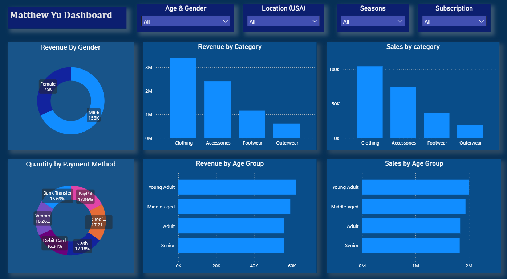
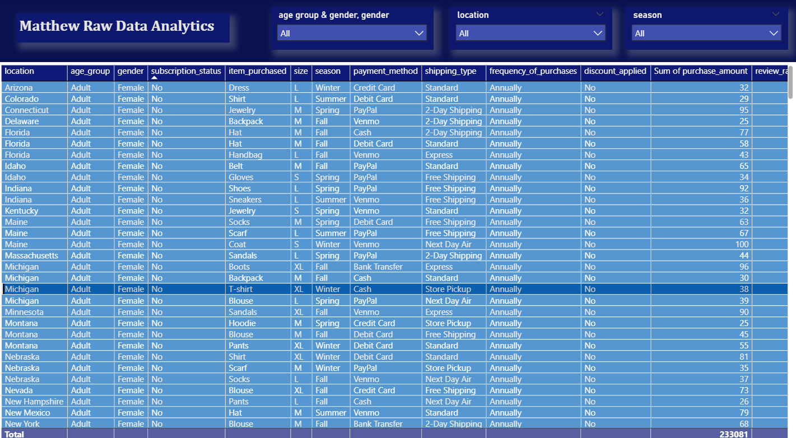
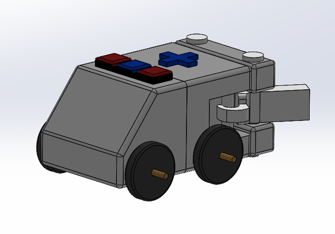
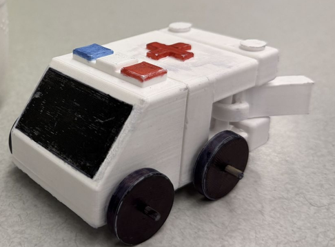
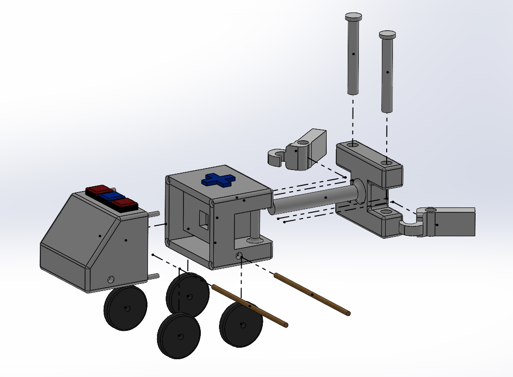
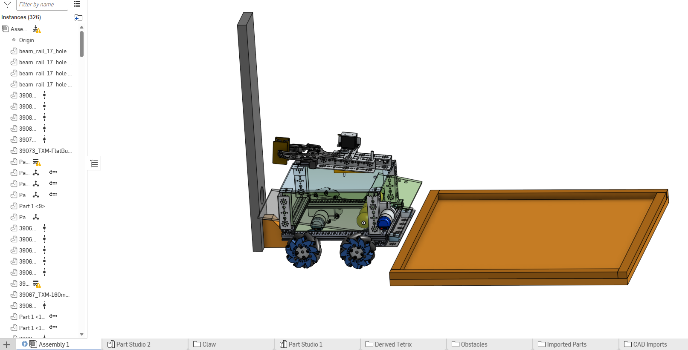
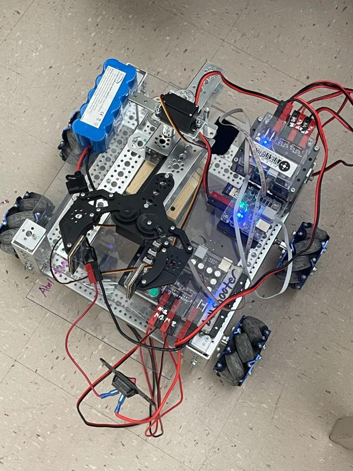

Systems & Computing Engineering
University of Guelph
Focused on the intersection of Mechatronics Robotics. Interested in Digital Systems, Automation, and Data Analysis.
Data Analyst - co-op Return Offer
Teladoc Health Canada // Statistical Reporting & Automation
In Progres...
Data Analyst - Intern
Teladoc Health Canada // Statistical Reporting & Automation
Automated complex statistical reports that saved the team hours of manual entry and led the migration of legacy data systems into dynamic Power BI dashboards. Cleaned and modeled data from Excel sheets then transformed to PowerBI. Reduced data pull request time for large queries and assisted colleagues with data cleaning and visualization.
CNC Machine Operator
Linamar Corporation // Precision Manufacturing
Operated twin-spindle CNC lathes and mills to manufacture 4K/3K transmission carriers within a high volume production environment. I was responsible for maintaining strict dimensional integrity through the use of precision metrology tools, including height gauges and Go/No-Go thread gauges. Beyond manual checks, I managed shift start quality audits and analyzed SPC (Statistical Process Control) data to ensure total part compliance. My role required a high level of technical literacy in reading complex blueprints and performing real-time machine offset adjustments to maintain rigorous ISO 14001 and 5S standards
Customer Analysis - Data Model & Visualalization
Analyzed customer shopping behavior data to uncover purchasing trends, customer segments, and business insights that can help improve marketing, sales strategy, and customer retention


Solar Hydraulic Excavator
Reverse engineering and virtual reconstruction of complex Excavator.
.png)
Kinder™ Emergency Services Toy - AmbuLaunch
Mechanical design, 3D printing, and kinetic energy transformation.
Led the mechanical design of a functional ambulance themed toy designed for Kinder™. Key technical achievements included:
- Designed an integrated Spring Loaded system capable of storing and transforming potential energy into kinetic motion.
- Developed all components in SolidWorks, 75% of total mass for FDM 3D Printing. Used basic PLA fillament for prototyping (5 prototypes) then PETG fillament for final design
- Engineered a collapsible structure that disassembles into a 10cm Kinder™ egg and features tool less assembly.



Skills Canada Robotics – TeleOperated Claw Mechanism
Design, coded, and implementation collecter bot with a 4 man team.
Technical Highlights:
- Language implementation: C/C++ Arduino IDE
- Drivetrain: Implemented a Mecanum wheel drivetrain, enabling 360-degree omnidirectional movement for precise positioning
- Mechanical System: 3D CAD through OnShape Includes collection pool for balls and operated Rack & Pinion Claw for designated task
- Materials: Lexan, Tetrix MAX DC Motor, Arduino, Servo Motor

